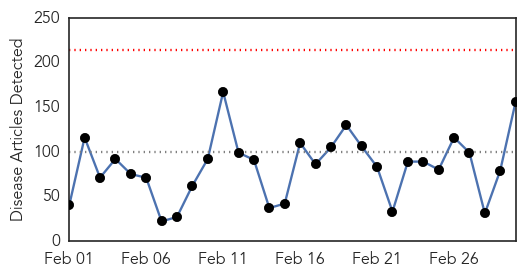
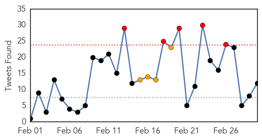

30 Day Trends
Web: 0 alerts, 0 warnings
Twitter: 8 alerts, 7 warnings
Top Articles:
- 1.000
- Spanish nurse contracts Ebola in Madrid
- 1.000
- President Sirleaf Urges U.S. to Continue Ebola Aid
- 1.000
- FDA OKs trials for experimental Ebola drug to begin in Liberia
- 1.000
- WHO declares end of Ebola outbreak in Sierra Leone, but neighbor Guinea struggles to end virus
- 0.999
- Sierra Leone's vice president becomes highest ranking official to be quarantined
- 0.999
- Exclusive: Guinea says Ebola patients sent home after botched blood tests
- 0.999
- Africa's medicine men key to halting Ebola spread in Guinea
- 0.999
- Guinea says Ebola patients sent home after botched blood tests
- 0.999
- Exclusive: Guinea says Ebola patients sent home after botched blood tests
- 0.999
- Untitled Article
- 0.999
- Africa's traditional healers help halt Ebola's spread
- 0.998
- New Confirmed Cases of Ebola In Africa, Update
- 0.998
- Sierra Leone VP Quarantines Himself After Bodyguard Dies Of Ebola
- 0.998
- China's efforts in combating the Ebola virus recognized by the UN -
- 0.998
- Sierra Leone's vice president becomes highest ranking official to be quarantined
- 0.998
- Sierra Leone’s vice president in quarantine for Ebola
- 0.998
- Isolation can take emotional toll on volunteers at risk of Ebola
- 0.998
- Interview: UN hails China's "tremendous" help in battling Ebola
- 0.998
- Vice President of Sierra Leone Places Self Under Ebola Quarantine as Cases Rise
- 0.998
- Liberia looks forward to end of Ebola
- 0.997
- Africa's medicine men key to halting Ebola spread in Guinea
- 0.997
- Sierra Leone's vice president in quarantine for Ebola
- 0.997
- Sierra Leone's vice president in quarantine for Ebola
- 0.997
- Sierra Leone’s VP in quarantine for Ebola
- 0.997
- Sierra Leone’s vice president in quarantine for Ebola: News
- 0.997
- EU response to the Ebola outbreak in West Africa, 02 March 2015 - Sierra Leone
- 0.997
- EU response to the Ebola outbreak in West Africa
- 0.996
- Interview: Sierra Leone thanks China for aid in fighting Ebola: FM
- 0.995
- Ebola in Brussels – a high profile conference
- 0.995
- 'Ebola nurse' Nina Pham sues Texas hospital
- 0.995
- Questions remain about how Dallas nurse got Ebola
- 0.995
- U.S., Liberia kick off trial of Ebola drug ZMapp
- 0.995
- West Africa Ebola update
- 0.995
- Dallas nurse Nina Pham free of Ebola
- 0.995
- Dealing with drugs
- 0.995
- Ebola outbreak: Sierra Leone vice-president quarantined
- 0.995
- Ebola Virus Reaches Sierra Leone VP’s Office
- 0.993
- Sierra Leone Vice President in Self Quarantine
- 0.993
- Sierra Leone moves beyond Ebola
- 0.993
- Samuel Sam-Sumana, the Vice President of Sierra Leone, Quarantines Himself For Three Weeks As Ebola Rises
- 0.993
- Dallas nurse declared free of Ebola
- 0.993
- 'Juju' men say they could have helped curb Ebola
- 0.993
- Namibia makes strides in Ebola help
- 0.991
- Nina Pham, Dallas nurse who survived Ebola, sues hospital
- 0.990
- Ebola survivor Nina Pham is suing the hospital chain she says botched her case
- 0.990
- Sierra Leone vice president in quarantine over Ebola
- 0.989
- 101st Returns Home From Liberia and Ebola Mission
- 0.988
- Youngstown News, EBOLA survivor Report
- 0.988
- New phase of the Ebola battle
- 0.987
- Life After Ebola: Nurse Nina Pham Says She Has Nightmares, Aches, Hair Loss
Showing top 50 articles...
Top Tweets:
- 0.930
- Texas nurse who contracted Ebola to sue hospital chain - CNN http://t.co/eayfJWKPtr ebola EVD
- 0.908
- Ebola Update: 23,825 confirmed, probable and suspected cases reported in 3 most affected countries, with 9,666 deaths. EbolaResponse
- 0.846
- Isolation can take emotional toll on volunteers at risk of Ebola - Los Angeles Times http://t.co/feXMJ4Fbv9 ebola EVD
- 0.846
- Isolation can take emotional toll on volunteers at risk of Ebola - Los Angeles Times http://t.co/MNgM3E7CAT ebola EVD
- 0.845
- Monthly Overview on the Ebola Outbreak in West Africa for February 2015 http://t.co/I3msfgg2Xl
- 0.844
- Nurse Who Survived Ebola Says Hospital Failed Her - ABC News http://t.co/xGOErhLUzy ebola EVD
- 0.844
- Attorney: Ebola nurse to sue for negligence - USA TODAY http://t.co/EXEcnTRA53 ebola EVD
- 0.831
- Ebola Survivor Nina Pham Suing Hospital to Be 'Voice for Other Nurses' - ABC News http://t.co/EzMosTTD9X ebola EVD
- 0.820
- RT: Liberia: reviving ag activities of communities affected by the Ebola outbreak UNFAO http://t.co/bEkABFK61R http://t…
- 0.746
- Liberia Ebola doctor: 'We're going to win very soon' - BBC News http://t.co/CtGC80zI92 ebola EVD
- 0.742
- Sierra Leone vice president places himself in Ebola quarantine http://t.co/noXjdm9CA4 Africaagainstebola
- 0.742
- Sierra Leone vice president places himself in Ebola quarantine http://t.co/noXjdlS1Iw Africaagainstebola
- 0.710
- Africa's medicine men key to halting Ebola spread in Guinea | @TR_Foundation http://t.co/vnlLy3acXJ
- 0.681
- RT: Sierra Leone's Vice President quarantines himself for 21 days after his guard dies of Ebola http://…
- 0.658
- For Sierra Leone's amputees, Ebola hits twice as hard http://t.co/OGXNSAdz5I
- 0.643
- Note much criticism comes from people not working in affected countries or attempting Ebola treatment trials.
- 0.577
- The brother went to fight Ebola. So did his sister. Mom was 'a wreck' - 89.3 KPCC http://t.co/utDVPFALbq ebola EVD
- 0.576
- Fujifilm Drug Draws Interest in Fight Against Ebola - Wall Street Journal http://t.co/pMGvDYJVI6 ebola EVD
- 0.569
- Transparency International calls for comprehensive audit of Ebola funds in West Africa http://t.co/6AgM27OI8F
- 0.548
- Growing Epidemic: Ebola and the Global Response http://t.co/gOegfyuzNG
- 0.540
- RT: Having and Fighting Ebola — Public Health Lessons from a Clinician Turned Patient, by Craig Spencer, M.D., M.P.H. http://t.co/kW…
- 0.514
- Scientists search for Ebola vaccination http://t.co/3jbftQfUdR
- 0.502
- The Ebola virus will not just stop suddenly http://t.co/TQdMIrrj1L ZeroCases http://t.co/lWWO89Zl1n
Web/News Articles
Tweets
Article Locations

Article Confidences